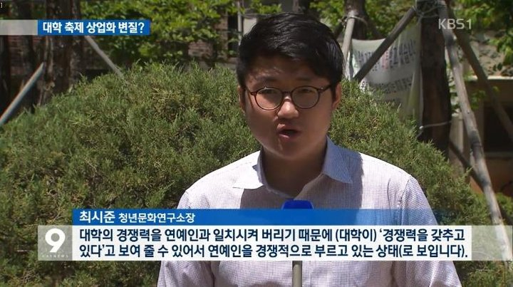

JTBC 방송 출연
"아니면 나와서 또 다른 삶을 살 것인가" — 퇴사 이후의 삶과 청년 창업을 주제로 한 방송 인터뷰.
TV06 — MEDIA & INSIGHTS
언론이 남긴 기록과, 제가 직접 쓰는 판단기준의 기록입니다.
PRESS ARCHIVE
브랜드와 사업의 성장 과정이 남긴 공개 기록입니다.
"아니면 나와서 또 다른 삶을 살 것인가" — 퇴사 이후의 삶과 청년 창업을 주제로 한 방송 인터뷰.
TV
청년문화연구소장으로서 대학 문화를 진단한 KBS 뉴스 인터뷰.
TV한국의 퇴사·창업 트렌드를 다룬 중국 국영방송 보도에 현장 인터뷰로 소개.
TVMBC 다큐스페셜('대학 5학년'), EBS, 매경이코노미, 파이낸셜뉴스, 아시아투데이, CNB뉴스, 프라임매거진 등 방송·지면 다수.
TV · PRINT직영 중심의 빠른 확장과 공간대여 시장의 성장을 다룬 보도. 프라이머 15기 선정 이후 반년 만에 5배 이상 성장한 시기의 기록.
기사 보기 ↗2018년 홍대 1호점에서 시작해 서울·경기·부산·대구·광주 등 전국 신규 지점으로 확장한 성장 기록.
기록 보기 ↗국내 대표 스타트업 액셀러레이터 프라이머 15기에 선정되며 사업모델의 가치를 인정받은 기록.
프로필 보기 ↗공간대여 사업 초기, 라이프스타일 매거진과 진행한 인터뷰. (지면 기사)
MAGAZINE차세대 창업 아이템으로 떠오른 공간대여 비즈니스를 주제로 신촌·강남에서 창업 설명회를 개최, 성황리에 마무리한 기록.
EVENT모든 공간을 직접 설계·시공하며 운영 중인 공식 지표입니다. (자사 기준)
공식 사이트 ↗OFFICIAL CHANNELS
INSIGHTS — COLUMN
짧지만 현장에서 나온 글입니다. 제목을 누르면 전문이 열립니다.
임대인들은 공실을 '손실'로 부릅니다. 저는 '재고'라고 부릅니다. 팔리지 않는 재고의 원인은 대개 상품이 아니라 진열에 있습니다. 공간도 같습니다. 엘리베이터 없는 5층, 채광 없는 지하 — 이 조건들은 '일반 임대'라는 진열 방식에서만 결함입니다.
관점을 바꾸면 계산이 달라집니다. 비선호층의 낮은 임대료는 목적형 공간에게 최고의 원가 경쟁력입니다. 프라이빗 모임, 촬영, 스테이처럼 '찾아오는 수요'는 층수를 따지지 않습니다. 그들이 따지는 것은 목적에 맞는가, 예약이 편한가, 가격이 합리적인가 — 세 가지뿐입니다.
그래서 공실 앞에서 제가 던지는 질문은 "임대료를 얼마나 내릴까"가 아닙니다. "이 조건을 강점으로 쓰는 수요는 누구인가"입니다. 그 답이 나오면 공실은 자산이 되고, 답이 없으면 정직하게 '보류'를 권합니다. 설계 없는 낙관은 공실보다 비쌉니다.
실패하는 공간대여 창업에는 공통된 순서가 있습니다. 먼저 인테리어에 반하고, 다음에 매물을 계약하고, 마지막에 수익을 계산합니다. 순서가 완전히 거꾸로입니다. 저는 340개가 넘는 공간을 만들며 이 순서를 뒤집는 것만으로 결과가 달라지는 걸 반복해서 봤습니다.
올바른 순서는 이렇습니다. ① 반경 수요 확인 — 이 동네에서 누가, 무엇을 위해, 얼마에 공간을 빌리는가. ② 고정비 계산 — 월세와 관리비를 예약 몇 건이 감당하는가. ③ 운영구조 설계 — 무인으로 돌릴 수 있는가, 내 시간이 얼마나 묶이는가. ④ 그리고 나서야 인테리어입니다. 인테리어는 예약을 '조금 더' 받게 할 뿐, 구조의 적자를 메워주지 못합니다.
예쁜 공간은 사진을 남기고, 예약되는 공간은 통장을 남깁니다. 창업 전 스스로에게 물어보세요 — 나는 지금 공간을 꾸미려는 것인가, 사업을 설계하려는 것인가.
"무인이면 편하겠네요." 가장 많이 듣고, 가장 위험한 말입니다. 무인공간에서 사람이 하던 일은 사라지지 않습니다. 예약 응대, 출입 안내, 결제와 환불, 청소, 민원 — 전부 그대로 남습니다. 다만 그 일을 '사람'이 아니라 '프로세스'가 하도록 옮겨야 할 뿐입니다.
그래서 무인공간의 성패는 오픈 전에 갈립니다. 예약과 결제는 자동으로 이어지는가. 고객은 안내 없이 스스로 입·퇴실할 수 있는가. 문제가 생기면 몇 분 안에 원격으로 해결되는가. 청소와 점검은 누가, 언제, 어떤 체크리스트로 도는가. 저희가 전국 120여 개 공간을 최소 인력으로 운영할 수 있는 이유는 이 질문들에 대한 답을 SPMS라는 시스템으로 만들어뒀기 때문입니다.
무인화는 인건비 절감 기술이 아니라 운영 설계 능력입니다. 프로세스 없이 사람만 뺀 공간은, 무인(無人)이 아니라 무주공산(無主空山)이 됩니다.
※ 더 많은 칼럼이 준비되고 있습니다. 새 글 소식은 커뮤니티와 공식 채널에서 알립니다.
공간수익화, 공실 문제, 무인공간, 1인 창업(자능사)을 주제로 한 미디어 협업을 환영합니다. 매체와 기획 의도를 함께 보내주시면 빠르게 회신드립니다.
미디어 문의하기